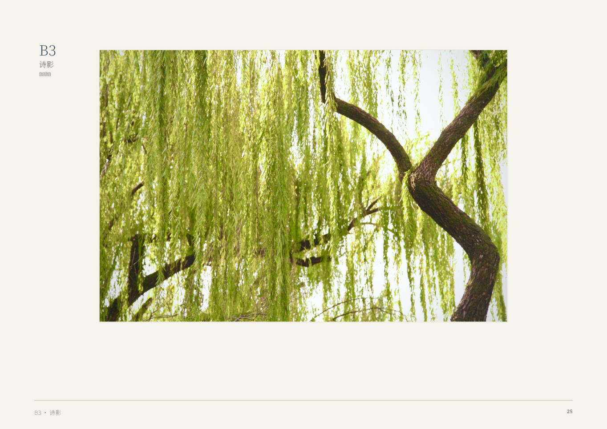
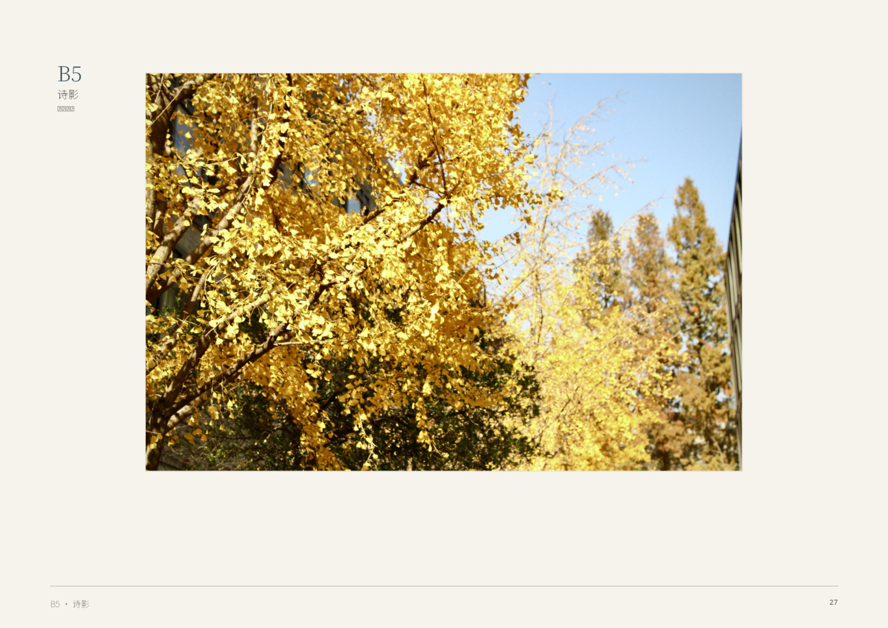
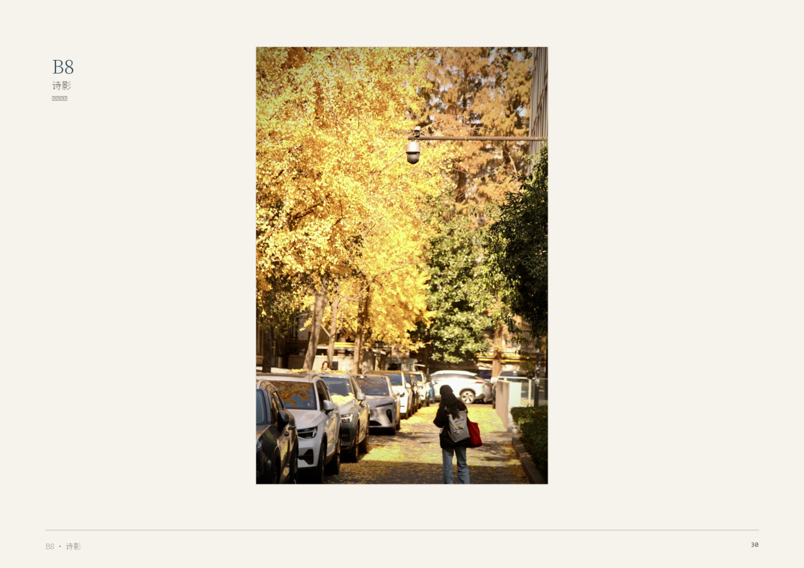
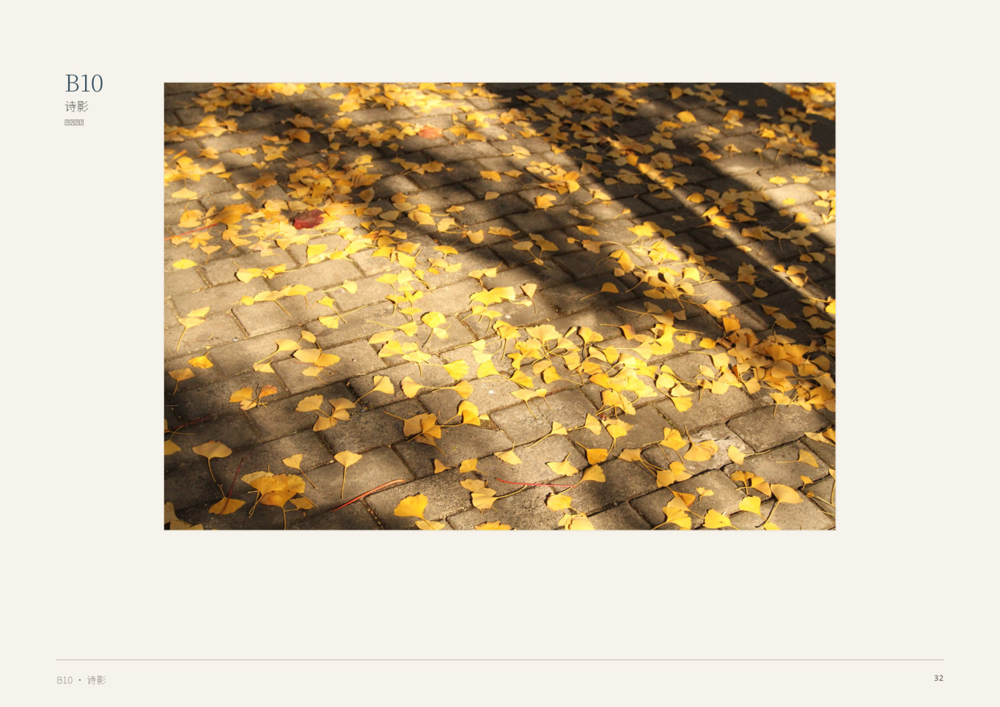

Projects & Design
Public Art · Community · Graphic Design
Projects that move beyond the studio — public installations, community-based practice, design for cultural institutions, and an ongoing experiment in collective artistic production.
Public Art & Installation

Flowing Mountain · Wave Traces (流山·浪痕)
Qingdao Public Art Pop-up Project. A semi-transparent mountain installation engaging coastal ecology and urban memory. Commission proposal for Qingdao West Coast cultural district.

Mountain-Sea Traces (山海游痕)
Public sculpture series exploring the relationship between body, landscape, and inscription. The body as a brush, the mountain-sea as ink.

Body as Brush, Mountain-Sea as Ink
Stuttgart installation concept. A spatial translation of Chinese landscape aesthetics into a participatory public artwork.

Truck Seal Project (卡车印章)
Community art initiative: recycled materials distributed to truck drivers, city-stamp system inspired by Chinese landscape painting brushwork. Visibility and dignity for mobile workers.
Graphic & Commercial Design
Organizational Design
Anonymous Art Company (匿名艺术公司计划)
A framework for collective-presenting creative agency: single principal maintains judgment rights, execution labor is outsourced, external presentation as institutional entity. Designed to accumulate long-term influence while protecting anonymity and preserving interfaces for future community practice. Built on the principle that “thought does not need to become a system before it enters the world.”